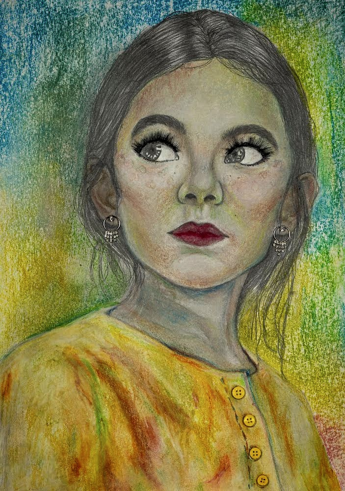

Embracing Imperfections
Project Type
Creative Portrait
Date
2022
Material
Prismacolor Pencil, Markers, Gouache, Acrylic Paint, Watercolor, Ink Pen, Gel Pen
Award
Scholastic Art & Writing Awards: Silver Key Winner (2022-23)
Inspiration
During a trip to downtown New York, I was startled by the prevalence of a young woman exhaling a cloud of cigarette smoke into the air.
Description
The damage to our DNA through smoking reminds us of the fragility of our living code. As the woman exhales a cloud of cigarette smoke, the somber shades of brown show the painful struggles of her internal organs. The once harmonious code of her body now falters and transforms into errors and dysfunction leading to disease.